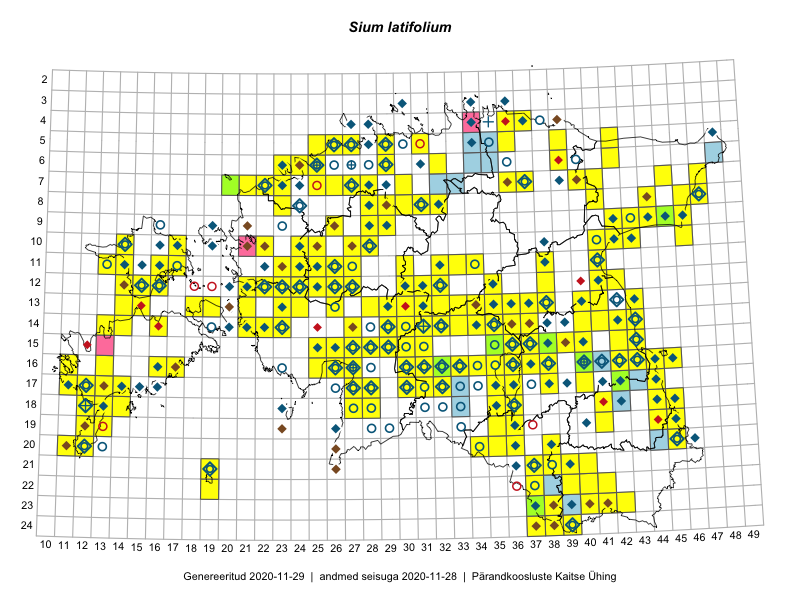

Sium latifolium
Uuendatud: 2016-12-01
Kaardile koondatud taksonid: Sium latifolium L.

Kaart põhineb 259 kirjel.
Kuvatud viited 20 esimesele andmebaasikirjele, ülejäänud PlutoFis
- Toomas Kukk, Eerik Leibak: 2015-08-09: 13-15: ala
- Toomas Kukk, Eerik Leibak: 2015-08-10: 13-14: ala
- Toomas Kukk, Eerik Leibak: 2015-08-10: 13-15: ala
- Ott Luuk, Jaak-Albert Metsoja: 2015-05-27: 12-22: ala
- Peedu Saar: 2015-07-04: 18-45: ala
- Peedu Saar: 2015-07-04: 18-44: ala
- Peedu Saar: 2015-07-14: 15-38: ala
- Toomas Kukk, Kersti Tambets, Sten Mander, Janika Sammasto, Timo Luhamäe: 2014-07-29: 18-45: ala
- Peedu Saar, Liina Oja: 2015-06-09: 17-27: ala
- Peedu Saar, Liina Oja: 2015-06-10: 14-30: ala
- Peedu Saar, Liina Oja: 2015-06-11: 15-29: ala
- Peedu Saar, Liina Oja: 2015-06-12: 13-35: ala
- Toomas Kukk, Eerik Leibak: 2015-07-29: 16-45: ala
- Peedu Saar, Liina Oja: 2015-07-20: 08-44: ala
- Toomas Kukk, Eerik Leibak: 2015-07-29: 16-44: ala
- Tiit Hallikma, Toomas Kukk: 2015-06-10: 15-30: ala
- Toomas Kukk, Tiit Hallikma: 2015-06-10: 15-31: ala
- Peedu Saar: 2015-08-04: 14-36: ala
- Peedu Saar: 2015-08-10: 13-40: ala
- Thea Kull, Eerik Leibak: 2015-07-05: 16-42: ala